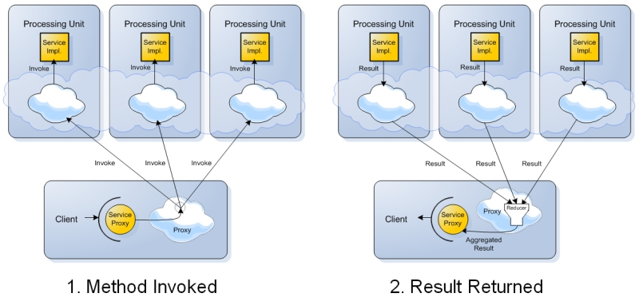

Section Summary: Remoting allows you to use remote invocations of POJO services, with the space as the transport layer.
Overview
Spring provides support for various remoting technologies. GigaSpaces uses the same concepts to provide remoting, using the space as the underlying protocol.
Some benefits of using the space as the transport layer include:
High availability – since the space by its nature (based on the cluster topology) is highly available, remote invocations get this feature automatically when using the space as the transport layer.
Load-balancing – when using a space with a partitioned cluster topology, each remote invocation is automatically directed to the appropriate partition (based on its routing handler), providing automatic load-balancing.
Performance – remote invocations are represented in fast internal OpenSpaces objects, providing fast serialization and transport over the net.
Asynchronous execution – by its nature, remoting support is asynchronous, allowing for much higher throughput of remote invocations. OpenSpaces allows you to use asynchronous execution using Futures, and also provides synchronous support (built on top of it).

The OpenSpaces API supports two types of remoting, distinguished by the underlying implementation used to send the remote call. The first is called Executor Based Remoting, and the second is called Event Driven Remoting.
Choosing the Correct Remoting Mechanism
This section explains when you should choose to use each of the remoting implementations. Note that as far as the calling code is concerned, the choice between the implementations is transparent and requires only configuration changes.
In most cases, you should choose Executor Based Remoting. It is based on the GigaSpaces Task Executors feature, which means that it executes the method invocation by submitting a special kind of task which executes on the space side by calling the invoked service. It allows for synchronous and asynchronous invocation, map/reduce style invocations and transparent invocation failover. Event Driven Remoting supports most of the above capabilities, but does not support map/reduce style invocations. In terms of implementation, it's based on the Polling Container feature, which means that it writes an invocation entry to the space which is later consumed by a polling container. Once taking the invocation entry from the space, the polling container's event handler delegates the call to the space-side service.
The Event Driven Remoting implementation is slower than the Executor Based Remoting since it requires 4 space operations to complete a single remote call: write invocation entry by client --> take invocation entry by polling container --> write invocation result by polling container --> take invocation result by client. In contrast, Executor Based Remoting only requires a single execute() call.
When you would like the actual service not to be collocated with the space. With Executor Based Remoting, the remote service implementation can only be located within the space's JVM(s). With Event Driven Remoting, you can locate the client on a remote machine and use the classic Master/Worker pattern for processing the invocation. This offloads the processing from the space (at the expense of moving your service away from the data it might need to do the processing).
When unexpected bursts of invocations are a probable scenario, using Event Driven Remoting may prove worthwhile, since invocations are not processed as they come, they are "queued" in the space and are processed by the polling container when its available. By limiting the number of threads of the polling container you can make sure the invocations do not maximize the CPU of the space
Section Contents
Executor Based Remoting — Executor Remoting allows you to use remote invocations of POJO services, with the space as the transport layer using OpenSpaces Executors.
Event Driven Remoting — Event Driven Remoting allows you to use remote invocations of POJO services, with the space as the transport layer using a polling container on the space side to process the invocations